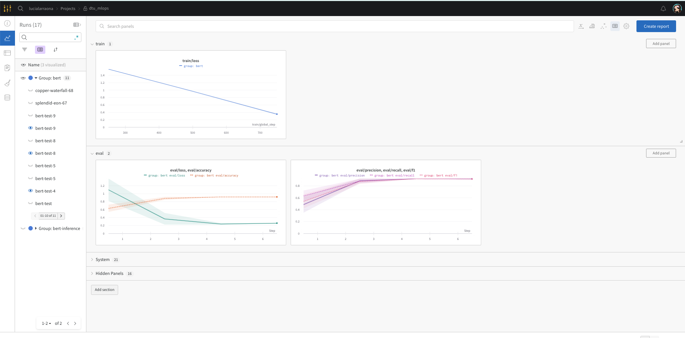
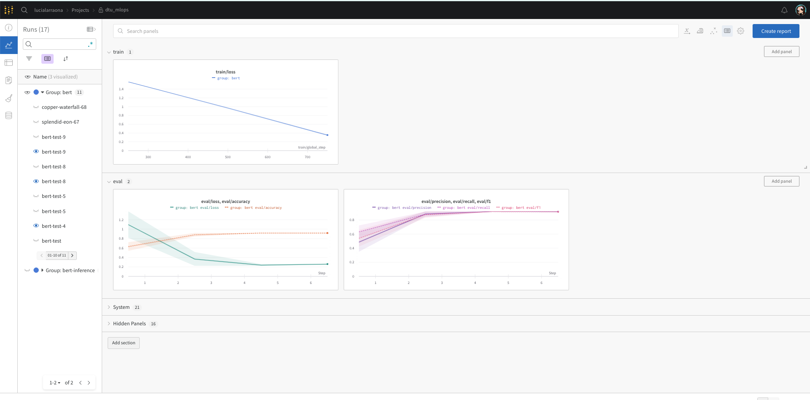
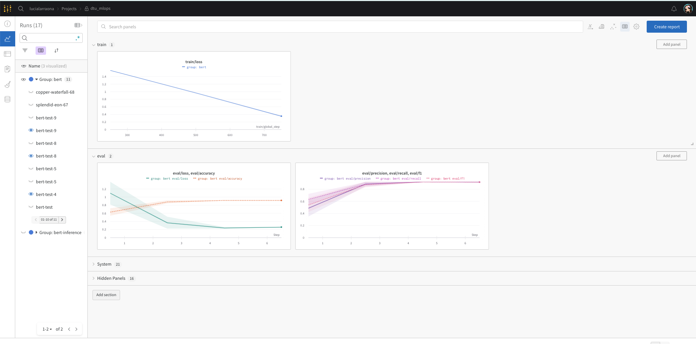
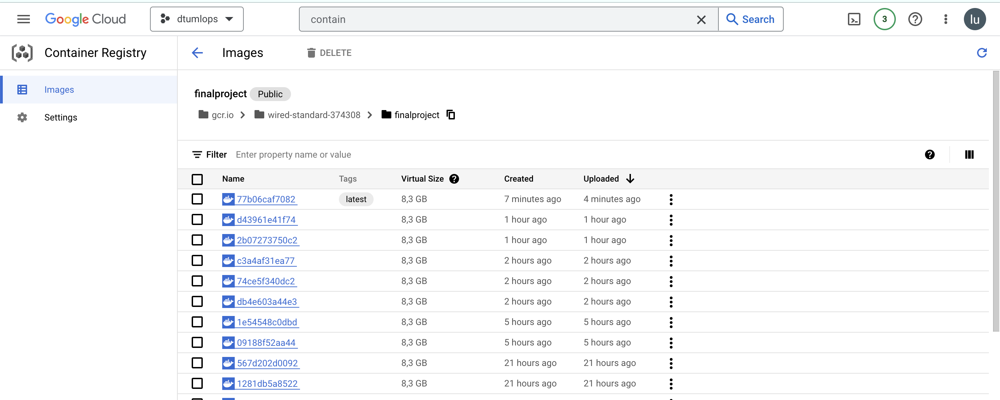

{kind=link}
 
This is the report template for the exam. Please only remove the text formatted as with three dashes in front and behind like:
--- question 1 fill here ---
where you instead should add your answers. Any other changes may have unwanted consequences when your report is auto
generated in the end of the course. For questions where you are asked to include images, start by adding the image to
the figures subfolder (please only use .png, .jpg or .jpeg) and then add the following code in your answer:
markdown

In addition to this markdown file, we also provide the report.py script that provides two utility functions:
Running:
bash
python report.py html
will generate an .html page of your report. After deadline for answering this template, we will autoscrape
everything in this reports folder and then use this utility to generate an .html page that will be your serve
as your final handin.
Running
bash
python report.py check
will check your answers in this template against the constrains listed for each question e.g. is your answer too short, too long, have you included an image when asked to.
For both functions to work it is important that you do not rename anything. The script have two dependencies that can
be installed with pip install click markdown.
The checklist is exhaustic which means that it includes everything that you could possible do on the project in relation the curricilum in this course. Therefore, we do not expect at all that you have checked of all boxes at the end of the project.
make_dataset.py file such that it downloads whatever data you need andrequirements.txt file with whatever dependencies that you are usingpep8) while doing the projectEnter the group number you signed up on
Answer:
44
Enter the study number for each member in the group
Example:
sXXXXXX, sXXXXXX
Answer:
s220492, s220351, s220243
What framework did you choose to work with and did it help you complete the project?
Answer length: 100-200 words.
Example: We used the third-party framework ... in our project. We used functionality ... and functionality ... from the package to do ... and ... in our project.
Answer:
We used the Transformers library, which is a third party framework built upon Pytorch in our project and provides thousands of pretrained models to perform different tasks, and is state-of-the-art in natural language processing. We chose the pretrained Bert-Base tokenizer and the Bert-Base model for text classification, which we fine-tuned for the sentiment classification task. For training the model we used the trainer function from HuggingFace, optimized for transformers, which includes evaluation and prediction functions for inference. To calculate the metrics during the testing phase we used the sklearn library functions, that include accuracy, precision, recall, confusion matrix and classification report.
In the following section we are interested in learning more about you local development environment.
Explain how you managed dependencies in your project? Explain the process a new team member would have to go through to get an exact copy of your environment.
Answer length: 100-200 words
Example: We used ... for managing our dependencies. The list of dependencies was auto-generated using ... . To get a complete copy of our development enviroment, one would have to run the following commands
Answer:
To automatically create and maintain the requirements.txt file, which contains information about all of the project dependencies, we used the pipreqs package. The file created this way contains only packages used in the current project, not all of the packages installed in the environment. We were also developing our code in a separate conda environment, therefore we could get the list of dependencies by using pip freeze command. The file with requirements has to be updated after every created change, to ensure that it contains up-to-date dependencies.
Our development environment is copied when running pip install requirements.txt command. It's recommended to first create new python environment (e.g. with conda create --name my_env), and install dependencies afterwards.
We expect that you initialized your project using the cookiecutter template. Explain the overall structure of your code. Did you fill out every folder or only a subset?
Answer length: 100-200 words
Example: From the cookiecutter template we have filled out the ... , ... and ... folder. We have removed the ... folder because we did not use any ... in our project. We have added an ... folder that contains ... for running our experiments. Answer:
The overall structure of our project can be seen at the bottom of our readme file in the repository. From the cookiecutter template we have filled out the src/models, src/data, data, models, docs folder. Inside de src/ folder we have added a config folder which contains all .yaml files for our experiments. We have removed the notebooks and references folders because we did not created notebooks in our project. We have added a test folder that contains test scripts of our model to be sincronized with github actions, and an app folder with scripts for deployment of our app with FastAPI. The reports folder which contains this report and the figures folder inside with all pictures.
Did you implement any rules for code quality and format? Additionally, explain with your own words why these concepts matters in larger projects.
Answer length: 50-100 words.
Answer:
In our scripts, we used informative comments, to make our code clear and easier to understand. In a large project with code which is usually developed by many different people, rules for code quality and format are helping to keep it coherent, in order to make it more clear and easy to understand. When running flake8 and isort we found many warnings pointing we were not compliant to pep8 regulations (as stressed students), however we were more focused on making other tools work and just revised it at the very end of our project with no time for furhter changes.
In the following section we are interested in how version control was used in your project during development to corporate and increase the quality of your code.
How many tests did you implement and what are they testing in your code?
Answer length: 50-100 words.
Example: In total we have implemented X tests. Primarily we are testing ... and ... as these the most critical parts of our application but also ... .
Answer:
In total we have implemented 5 tests. 3 test covers the data side of our project and 2 are related to the model. This two parts of our application are the most critical ones so we decided to focus on them. In test_data script we are checking the number of samples in each dataset (train,validation and test), while test_model checks if the output of the model has a correct size and if device (cpu or cuda) was read properly.
What is the total code coverage (in percentage) of your code? If you code had an code coverage of 100% (or close to), would you still trust it to be error free? Explain you reasoning.
Answer length: 100-200 words.
Example: The total code coverage of code is X%, which includes all our source code. We are far from 100% coverage of our code and even if we were then...*
Answer:
The total code coverage of our code is 86% with 100% coverage on the scripts that are in tests/ directory. But even with coverage that high we would not trust that our code is 100% error free. Our test covers only the data and models unitesting. One can arque that our test are very simple and they may not cache errors. Nevertheless in this section we just wanted to show how the unitesting works and that we know how to use the Github actions. We simply did not have enought time to write sophisticated tess however, adding them to the existing ones is manageable.
Did you workflow include using branches and pull requests? If yes, explain how. If not, explain how branches and pull request can help improve version control.
Answer length: 100-200 words.
Example: We made use of both branches and PRs in our project. In our group, each member had an branch that they worked on in addition to the main branch. To merge code we ...
Answer:
Since it was only three of us, and we designed separated tasks that included changing complete different files along the project, we didn't use branching because we didn't crash each other's work. However, in the case we were to change someone else's files, then we agreed to add a new branch to revise before merging. Branches and pull requests can improve version control since they are designed to work independently of the main project branch (production branch) and makes it easy to separate and clearly define different tasks for different contributors on the same script (developer branches). It also helps when there are two possible solutions to the same problem / fix as the owner of the repository can revise and compare both, and choose the best one.
Did you use DVC for managing data in your project? If yes, then how did it improve your project to have version control of your data. If no, explain a case where it would be beneficial to have version control of your data.
Answer length: 100-200 words.
Example: We did make use of DVC in the following way: ... . In the end it helped us in ... for controlling ... part of our pipeline
Answer:
We did make use of DVC in the following way: We introduced our newly downloaded kaggle dataset as raw data, and then created a make_dataset.py script that would turn the raw text into tokenized and saved it in the processed data folder. We then created a remote storage bucket in the cloud and added the link to it with dvc add -d remote gs://mlops-bucket-project-data-44 finally we pushed the data to the bucket using dvc push which enables all users to download the data from the bucket using dvc pull
To keep track of the data versions (in this project only minor fixes, but on the long run a big upgrade) we added tags to our commits specifying the data version as v1.01 and so on. It helped us a lot since we no longer had to store the data in the github repo and everyone had access to the latest versions.
Discuss you continues integration setup. What kind of CI are you running (unittesting, linting, etc.)? Do you test multiple operating systems, python version etc. Do you make use of caching? Feel free to insert a link to one of your github actions workflow.
Answer length: 200-300 words.
Example: We have organized our CI into 3 separate files: one for doing ..., one for running ... testing and one for running ... . In particular for our ..., we used ... .An example of a triggered workflow can be seen here:
Answer:
For the Continous integration we are running unittesting. We have orginized our Continuous Integration into 2 separate test files: one for testing the data and one for testing the model output (checking if the number of labels is correct). In particular for our test, we used pytest and the covarage libraries. We test on multiple operation systems that is: ubuntu-latest, macOS-latest and windows-latest to ensure the operation system does not influence the overall performance of our model. On top of that we are testing 2 different python versions: python 3.8 and 3.9 to give some freedom to the end user. We used caching to speed up workflows by reusing the dependencies. We also had to add the dvc setup and dvc pull steps in our .yml file in order to get the data for the unittesting as is not included in the repository. Given the small size of our project, we decided to not perform linting, however, the setup for the github workflow would be the same, only changing the .yaml file to include it. Both, one of our latest workflows and the caching, can be seen in the figures below and an example of triggered workflow can be also seen here: https://github.com/lucialarraona/dtu_mlops23_project/actions/runs/3952086681/jobs/6766742324
In the following section we are interested in learning more about the experimental setup for running your code and especially the reproducibility of your experiments.
How did you configure experiments? Did you make use of config files? Explain with coding examples of how you would run a experiment.
Answer length: 50-100 words.
Example: We used a simple argparser, that worked in the following way: python my_script.py --lr 1e-3 --batch_size 25
Answer:
We used Hydra and different config files. To integrate it we added the decorator before our main function in train_mmodel.py and we referenced a default config file in the hydra decorator. To access the different values we replaced them inside the funcion by callign config.PARAMETER_NAME. With this setup it is possible to change the different hyperparemters from the command line adding the corresponding arguments as follows:
python train_model.py train.lr= 0.01 train.epochs=2
Reproducibility of experiments are important. Related to the last question, how did you secure that no information is lost when running experiments and that your experiments are reproducible?
Answer length: 100-200 words.
Example: We made use of config files. Whenever an experiment is run the following happens: ... . To reproduce an experiment one would have to do ...
Answer:
We made use of config files. When an experiment runs, the hyperparameters that have been called are stored in the config file designed for the experiment. We also created a hierarchy where the default_config.yaml would reference the other experiment config files and so on (see it below). In case of overriding some of the hyperparameters on the command line we ensure there is no information loss by tracking the experiment also with WandB. This API helps as save the hyperparameters used for every run, among other metrics. To reproduce an experiment one would only have to choose the appropiate .yaml file and reference it with the hydra decorator: @hydra.main(config_path="../config", config_name="CHOSEN_EXPERIMENT_TO_REPRODUCE.yaml")
├── config
│ ├── default_config.yaml <- references the other config
│ ├── train <- folder for training config files
│ │ ├── train_config.yaml
│ ├── exp1 <- folder for experiment1 config files
│ │ └── exp1_config.yaml
│
Upload 1 to 3 screenshots that show the experiments that you have done in W&B (or another experiment tracking service of your choice). This may include loss graphs, logged images, hyperparameter sweeps etc. You can take inspiration from this figure. Explain what metrics you are tracking and why they are important.
Answer length: 200-300 words + 1 to 3 screenshots.
Example: As seen in the first image when have tracked ... and ... which both inform us about ... in our experiments. As seen in the second image we are also tracking ... and ...
Answer:
As seen in the first picture, and given our project aimed for a multiclass classification, we have tracked accuracy, precision, f1, and recall for evaluation and loss and learning rate for training in order to find the optimal hyperparameters aiming for high accuracy. Wandb also includes some system metrics, which are useful to also explore the hardware performance during the experiment (GPu power usage, memory allocation and temperature). In our case, since we are using a virtual machine for training and furhter deployement, it should be taken into consideration for the cost of the resources.
All of our runs in this case are grouped under the name 'bert' given the possibility to add different experiments with other transformers and then, as seen in figure 2, we can track groups of experiments in parallel with the same metrics.
We considered the possibility of adding sweeps, however, we found a good combination of hyperparameters after only 10 experiments and we discarded it for this project. The procedure would have been the following: create a config file but with a dictionary of values for each hyperparamenter to try, and then start the agent so that it created random combinations of them for each run.

Docker is an important tool for creating containerized applications. Explain how you used docker in your experiments? Include how you would run your docker images and include a link to one of your docker files.
Answer length: 100-200 words.
Example: For our project we developed several images: one for training, inference and deployment. For example to run the training docker image:
docker run trainer:latest lr=1e-3 batch_size=64. Link to docker file:Answer:
For our project we decided to create one docker image for training given different complications. The image building is automated with Cloud build so that everytime we push code to the main branch of the project repository it builds a new image with a :latest tag. Given the docker file is meant to be a containerized application, to run our image the user would first need a machine with GPU, then would need to pull the image doing sudo docker pull gcr.io/wired-standard-374308/finalproject:latest and finally, run the image by using sudo docker run gcr.io/wired-standard-374308/finalproject:latest. Since it The link to the docker file is https://github.com/lucialarraona/dtu_mlops23_project/blob/main/Dockerfile
When running into bugs while trying to run your experiments, how did you perform debugging? Additionally, did you try to profile your code or do you think it is already perfect?
Answer length: 100-200 words.
Example: Debugging method was dependent on group member. Some just used ... and others used ... . We did a single profiling run of our main code at some point that showed ...
Answer:
In order to perform debugging, we decided it would be an individual task given the part of the code you where in charge of. In the case of building the model itself a lot of debugging was done for tokenizing etc. We created different stop points and explored the variables. While building the docker images, we tried to print the structure of the archives by running ´ls -a´ in the image in order to find bugs. The code isn't perferct, however we made sure we used the training/evaluation functions for the transformers given by HuggingFace since they are built on top of pytorch and ensure the most optimized performance for this large models. We didn't do profiling.
In the following section we would like to know more about your experience when developing in the cloud.
List all the GCP services that you made use of in your project and shortly explain what each service does?
Answer length: 50-200 words.
Example: We used the following two services: Engine and Bucket. Engine is used for... and Bucket is used for...
Answer:
We used the following services: Engine, Bucket, Cloud Build, Container registry and Cloud Functions. Engine is used to create Virtual Machine instances from which we can work as our own computer with more powerful hardware. Bucket is a remote storage space. Cloud build is used to build the docker images of our projects, and when the build is succesful they are stored in the Container registry, which is just a storage space in the cloud specifically defined for storing docker images.
The backbone of GCP is the Compute engine. Explained how you made use of this service and what type of VMs you used?
Answer length: 100-200 words.
Example: We used the compute engine to run our ... . We used instances with the following hardware: ... and we started the using a custom container: ...
Answer:
For our project we created an instance with an attached GPU, since none of us had a computer with the necessary specifications to be able to run our model training (the BERT transformer is a very large model). The hardware used in said Virtual Machine instance is and NVIDIA-T4 GPU and 200 GB of disk memory and it is located in central europe in order to reduce costs and latency. For our model to run we have tried two different approaches: directly copying the repository and running the scripts, and then pulling the docker image stored in our Container Registry.
Insert 1-2 images of your GCP bucket, such that we can see what data you have stored in it. You can take inspiration from this figure.
Answer:

Upload one image of your GCP container registry, such that we can see the different images that you have stored. You can take inspiration from this figure.
Answer:

Upload one image of your GCP cloud build history, so we can see the history of the images that have been build in your project. You can take inspiration from this figure.
Answer:
Did you manage to deploy your model, either in locally or cloud? If not, describe why. If yes, describe how and preferably how you invoke your deployed service?
Answer length: 100-200 words.
Example: For deployment we wrapped our model into application using ... . We first tried locally serving the model, which worked. Afterwards we deployed it in the cloud, using ... . To invoke the service an user would call
curl -X POST -F "file=@file.json"<weburl>Answer:
For deployment we wrapped our model into application, which returns predicted label of the sentence given by a user, we created it using FastAPI. We first deployed the app locally with uvicorn framework, which worked correctly. Afterwards we decided to deploy it in the cloud, using Cloud Functions in order to make it acessible for everyone using the curl command with the desired text to classify. To invoke the service an user would call
curl -m 310 -X POST https://europe-west1-mlops-374314.cloudfunctions.net/mlops-project -H "Content-Type: application/json" -d '{"text": "user text to test"}'
Additionally, since we have been using the HuggingFace library for the whole project, They also include and Inference API when we upload the model to their hub / sharing space. It is also public to everyone to download our model and try it our live.
Did you manage to implement monitoring of your deployed model? If yes, explain how it works. If not, explain how monitoring would help the longevity of your application.
Answer length: 100-200 words.
Example: We did not manage to implement monitoring. We would like to have monitoring implemented such that over time we could measure ... and ... that would inform us about this ... behaviour of our application.
Answer: We implemented monitoring, or at least we setup the application. However, we would have liked to have time to design a dashboard such that over time we could measure the performance when invoking the cloud function for inference.
We deployed our model using cloud functions in google cloud, which comes with a basic monitoring dashboard, which includes information such as invocations/second, execution time, and memory utilisation.
This data provides insight into the real-world performance and reliability of the application, it allows to ensure that the application is fast and smooth for end users and keeps track of overall usage, which impacts the running costs. Monitoring tools usually provide alert systems, which inform about any disruptions in the application behavior. Alerting systems can be very useful and help to quickly respond to critical issues without the necessity of constantly monitoring the dashboards.
How many credits did you end up using during the project and what service was most expensive?
Answer length: 25-100 words.
Example: Group member 1 used ..., Group member 2 used ..., in total ... credits was spend during development. The service costing the most was ... due to ...
Answer: We used around 100$ in credits summing up the costs for the different members. Virtual Machine instances with attached GPUs turned out to be the most expensive resource while for example, remote storage in the buckets or running a cloud function was very cheap.
In the following section we would like you to think about the general structure of your project.
Include a figure that describes the overall architecture of your system and what services that you make use of. You can take inspiration from this figure. Additionally in your own words, explain the overall steps in figure.
Answer length: 200-400 words
Example:
The starting point of the diagram is our local setup, where we integrated ... and ... and ... into our code. Whenever we commit code and puch to github, it auto triggers ... and ... . From there the diagram shows ...
Answer:
The starting point of the diagram is the local setup, where based on the cookie cutter template we build our final project structure. In order to build our application for sentiment detection on text, we first created a specific conda environment which had all the requirements for this project installed (isolating and resolving future dependencies conflicts). Secondly, we used the the Transformers framework provided by Huggingface, as well as their functions for training and evaluation which are built using pytorch and pytorch lightning (this way we ensured to minimise boilerplate). For experiment tracking and logging, we made used of both Hydra (for the config files) and Weights and Biases for logging and tracking. To ensure correct data version control and introducing the cloud, we made use of DVC and GCP cloud storage to remotely store and keep track of our data files without loosing any of the previous versioning. The source code for the project is hosted in a github repository, which helped us with version control, as well as well with automation of testing and linting. Using the github repository also helped to automatically trigger the cloud build, so that everytime we pushed code to the main branch of the project it will generate an image of the project, conteinarizing the application automatically, and storing that image in the container registry. Making use of a VM instance in the cloud with the appropiate hardware specs to run this project, we can pull the training image from the registry and run it, which then saves the trained model in the HuggingFace Hub. Finally, we developed a FastAPI application that later on was built into a cloud function, which automatically pulls the trained model from the hub and let's the end user use the model for their own purpose.
Discuss the overall struggles of the project. Where did you spend most time and what did you do to overcome these challenges?
Answer length: 200-400 words.
Example: The biggest challenges in the project was using ... tool to do ... . The reason for this was ...
Answer:
The biggest challenge in our project was building and managing the docker images. The image itself is around 8GB and it took a very long time to build (around 30 minutes) even with a high-speed CPU. Even when verified that the steps to build the docker file where correct (approved by the teacher) and that the image was built with no errors, we could not manage to successfully run the image on the virtual machine as we encountered path related problems: FileNotFoundError: [Errno 2] No such file or directory: 'data/processed/train.pth' even though the data folder existed, and which also did not happen while running without the docker image directly on the virtual machine.
Regarding Vertex AI, we could not use it as it required to upgrade the google cloud account and ask for a quota increase that never came on time. We could only run the model on compute engine. We would have liked to use Vertex AI and are a bit bummed.
Apart from that, the rest of the steps where able to be performed smoothly. Tracking with wandb, unittesting, and deployement in both FastAPI and using cloud functions was very exciting to setup and to see that it worked as expected.
State the individual contributions of each team member. This is required information from DTU, because we need to make sure all members contributed actively to the project
Answer length: 50-200 words.
Example: Student sXXXXXX was in charge of developing of setting up the initial cookie cutter project and developing of the docker containers for training our applications. Student sXXXXXX was in charge of training our models in the cloud and deploying them afterwards. All members contributed to code by...
Answer: - Student s220492 was in charge of setting up initial cookie cutter structure, creating the model (train and predict script), hydra setup, wandb logging docker files and setting up resources from gcloud. - Student s220351 was in charge of creating make_dataset.py, model deployement and monitoring connection. - Student s220243 was in charge of setting up DVC, and Continuous integration: github actions, unittesting, linting, checking pep8 regulations. All members contributed to different parts of the code while debugging.
{kind=link}
{kind=link}
{kind=link}
{kind=link}